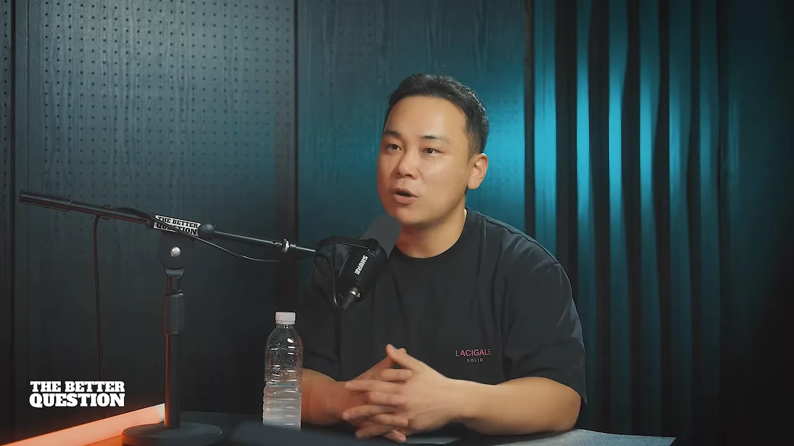

광고비 3,500억을 써 본 사람은 누구인가요?
이 영상은 진행자가 콘크리트 파머스의 최재명 대표를 1시간 40분 동안 인터뷰한 대담이에요. 화면에는 두 사람이 마이크 앞에서 이야기하는 모습만 나와요. 그래서 이 문서의 그림은 대부분 대표가 말로 설명한 구조와 숫자를 옮겨 그린 거예요.

광고비 3,500억, 매출로는 7,000억
대표가 자기소개로 꺼낸 숫자는 집행한 광고비예요. 작년 기준으로 메타, 네이버, 구글, 틱톡, 카카오에 쓴 광고비를 합치면 약 3,500억 원이에요. 요즘은 보통 ROAS(Return On Ad Spend) 200%를 보고 광고를 돌리니까, 매출로 치면 7,000억 원쯤을 만들어 본 셈이라고 설명해요.
회사는 지주사 체제예요. 아래 그림처럼 콘크리트 파머스 밑에 성격이 다른 사업자가 다섯 개 있고, 바깥에 정육점이 하나 더 있어요. 진행자가 "문어발 같다"고 하자 대표는 "어쩌다 보니"라고 웃어요.
매출은 기준에 따라 달라져요. 재무제표 기준으로 작년이 약 400억 원, 올해는 500억~600억 원 사이로 예상해요. 브랜드만 보면 약 350억 원이에요. 많은 대행사가 고객 광고비까지 매출로 잡아 숫자를 부풀리는데, 그렇게 계산하면 마케팅 쪽만 600억 원이 넘는다고 해요. 계열사를 모두 합치면 1천억 원 정도예요.
'가설주의' 대신 '실전주의'
브랜드를 직접 하게 된 계기는 광고주의 질문이었어요. "광고비도 그렇게 많이 써 보고 잘하면서, 왜 너희는 리스크를 안 지고 브랜드를 안 하냐." 대표는 대부분의 마케터가 가설로 일한다고 봐요. 그래서 자기 돈을 써서 실전으로 성공 방정식을 찾고, 그걸 고객사에 넘겨주자고 정했어요. 테스트로 시작한 브랜드가 작년에 약 200억 원을 했고, 같은 방정식을 적용한 고객사도 여럿 성공했다고 해요.
회사가 집중하는 일은 미디어 커머스예요. 메타, 구글, 네이버 같은 매체에 유료로 뜨는 영상·이미지 광고를 만들고, 집행하고, 고쳐 나가요. 광고가 잘할 수 있는 건 노출을 싸게 많이 내고, 방문자를 싸게 데려오는 데까지예요. 그 방문자가 사게 만들려면 상세 페이지와 상품, 1인당 구매 금액인 객단가까지 손봐야 해서 결국 컨설팅처럼 깊게 들어간다고 해요.
쇼핑몰 창업에서 대행사 대표까지
flowchart LR A["커스텀 굿즈 쇼핑몰 창업
컵·퍼즐·마우스패드"] --> B["이커머스 인하우스
8~9년, 팀장"] B --> C["아이보스 연재·강의
닉네임 '근육돌이'"] C --> D["컨설팅
1년에 스마트스토어 약 100곳"] D --> E["2019년 창업
마케팅 대행사"]
처음 창업은 친구와 차린 커스텀 굿즈 쇼핑몰이었어요. 컵에 사진을 넣고 퍼즐, 마우스패드, 시계도 팔았어요. 사업이 커지지 않자 친구가 떠났고, 그 경험으로 이커머스 회사에 팀장으로 들어갔어요. 쇼핑몰을 하다 보면 결국 광고를 알아보게 되는데, 대부분 대행사를 통해 배우게 되고 그 서비스가 만족스럽지 않았대요. 인하우스 경험이 쌓이자 '내가 제대로 된 서비스를 해 보자'는 생각이 들었다고 해요.
노하우를 공짜로 푼 이유
대표는 마케팅 커뮤니티 아이보스에 '스토어 매출 억대로 만드는 이야기'를 연재했어요. 당시에는 노하우를 숨기는 분위기였는데도 다 풀었어요. 이유는 매체 지식의 수명이 너무 짧다는 걸 겪었기 때문이에요.
- 컵을 팔던 시절에는 지식인에 질문과 답을 올리기만 해도 매출이 났어요.
- 사업을 접을 즈음엔 블로그도, 페이스북도 해야 했어요. 환경이 3개월, 6개월마다 바뀌었어요.
- 네이버 'N샵' 시절에는 아무도 SEO(Search Engine Optimization)를 신경 쓰지 않아서, 그것만 맞춰 올려도 상단에 떴어요. 이후 스마트스토어로 넘어가며 규칙이 또 바뀌었어요.
그래서 매체 지식은 혼자 쥐고 있어도 '금 낳는 거위'가 아니라 스쳐 가는 지식이라고 봤어요. 오래 남는 건 사람이 어떻게 움직이고 왜 소비하는지에 대한 이해예요. 연재 뒤 1년 동안 소상공인 스마트스토어를 약 100곳 컨설팅했고, 월 매출 5천~6천만 원을 처음 넘긴 모자 쇼핑몰의 감사 인사가 큰 보람이었다고 해요.
체력은 곧 매출이다
2019년 창업 때부터 입에 달고 다닌 말이에요. 같이 시작했던 사람들 중 많은 이가 버티지 못하고 떠났다고 해요. 체력이 떨어지면 집중력과 추진력이 떨어지고, 할 일을 미루는 습관이 생긴다고 봐요. 진행자도 운동이 '그만두고 싶을 때 몇 개 더 하는 습관'을 만든다며 맞장구를 쳐요.
사람을 믿는 법, 사람을 고르는 법
마케팅 대행사를 하다가 브랜드와 유통으로 넓힌 과정에서 대표가 꼽는 가장 큰 결정은 사람이에요. 자신은 '앞으로 나아가는 힘'을 맡고, 회사 구조와 시스템은 동업자에게, 새 브랜드는 이사에게 맡겼어요. 자신은 큰돈이 드는 결정만 했다고 해요. 그래서 지금도 "브랜드 하시죠?"라는 질문에 "제가 안 해요"라고 답한대요.
그 이사가 처음 맡은 브랜드는 6~8개월 동안 적자가 약 6억 원까지 쌓였어요. 대표가 접자고 하자 이사가 "한 달만 더 기다려 달라"고 했고, 기다렸더니 매출이 터지기 시작했어요. 돌아보면 자신이 조급했다고 말해요. 좋은 사람을 믿고 구조를 잘 짜서 맡기면 된다는 걸 이때 배웠대요.
면접에서 보는 것도 구체적이에요.
- 같은 질문을 여러 번 던져서 답이 바뀌는지 봐요. 일관성이 있으면 거짓말을 안 하는 사람이에요.
- 여럿이 한 프로젝트를 혼자 다 했다고 말하는 사람은 뽑지 않아요.
- "이 포트폴리오에서 저는 여기까지만 맡았고, 나머지는 배우고 싶어서 왔어요"라고 말하는 사람은 뽑아요.
말투, 표정, 인상도 많이 본다고 털어놓아요. 본인 말로는 유사과학이지만, 수많은 면접을 보며 생긴 확률 같은 감이라고 해요. 5년을 함께한 직원이 광고주를 빼서 나간 실패 사례도 있었다고 덧붙여요.
광고비를 크게 쓰면 보이는 것
진행자가 묻는 건 이거예요. 소상공인은 상상도 못 할 만큼 광고비를 쓰면, 그 규모에서만 보이는 패턴이 있나요? 대표의 답은 "너무 많죠"예요. 크게 세 가지를 들어요.
시장의 끝이 보여요
첫째는 시장 규모예요. 기미 화장품을 예로 들어요. 기미는 노화의 신호라 40대 이상, 특히 여성이 많이 고민해요. 이 상품을 온라인에서 '전환 캠페인'으로 돌리면 받을 수 있는 사람이 약 400만 명이라는 게 대표의 경험치예요. 기미를 고민하는 사람은 그보다 훨씬 많지만, 온라인에서 바로 사는 사람은 그 정도라는 뜻이에요.
대표는 이런 대규모 트래픽을 직접 받아 본 게 서너 번이에요. 브랜드가 달라도 객단가와 전환율이 거의 비슷하게 나왔다고 해요. 그러니 상한을 넘겨 더 받으면 대부분 의미 없는 트래픽이에요. 대신 그 사람들이 살 수 있는 새 창구, 예를 들어 오프라인 판매를 고민해 볼 수 있어요.
누가 돈을 많이 쓰나요?
둘째, 흔히 "중장년 여성이 돈을 잘 쓴다", "남자는 안 쓴다"고 하지만 대표는 "다 많이 쓴다"고 답해요. 같은 20대라도 온라인에서 쓰는 사람과 오프라인에서 쓰는 사람이 나뉘어요. 결국 세그먼트를 어떻게 나누느냐의 문제라는 거예요.
아무도 주목하지 않는 지면에서 매출이 터져요
셋째가 가장 재미있는 대목이에요. 광고가 붙는 자리를 지면이라고 하는데, 생각지 못한 지면에서 엉뚱한 사람이 산다는 거예요. 대표가 든 사례를 모으면 이래요.
| 지면 | 예상 | 실제로 잘 팔린 것 |
|---|---|---|
| 네이버 GFA(Glad For Advertiser) (블로그 글 사이 배너) | 남성은 잘 안 산다 | 고등어(구매자의 70%가 남성), 남성 화장품, 남성 활력제(아르기닌·마카), 에너지 드링크 |
| 유튜브의 여성 패션 룩북 영상 중간 광고 | 여성 시청자가 많을 것 | 남성 활력제. 실제로는 남성 시청 비율이 높아요 |
| 특정 정치 성향 채널 | — | 건강기능식품. 시청자 연령대가 맞아요 |
대부분은 '여드름 고민이 있는 사람은 여드름 영상을 볼 것'처럼 곧장 연결해서 생각해요. 대표는 실제로는 이렇게 한 끗 비틀린 곳이 더 잘 보인다고 해요. 블로그에서 패션·뷰티 정보를 찾는 남성이 그 사이 배너를 보고 사는 식이에요.
타겟을 이해하는 가장 확실한 방법
그런 지면은 어떻게 찾을까요? 대표는 계정을 여러 개 만들라고 권해요. 타겟의 나이와 내 제품의 관심사에 맞춰 각 계정에 콘텐츠를 계속 학습시키면, 그 계정 피드에 타겟이 보는 영상이 뜨기 시작해요. 그걸 보면서 그 사람을 이해하는 거예요.
진행자는 이 대목을 '현장에 답이 있다'는 말로 정리해요. 타겟이 아침, 점심, 저녁에 뭘 하고 어디에 모이는지 알면 마케팅이 쉬워진다는 원론이에요. 대표는 사람들이 더 큰 '치트키'를 찾다가 오히려 돌아가는 경우가 많다고 덧붙여요.
근데 대부분 더 큰 치트키를 찾고 있는게 오히려 더 돌아가는 길이 되는 경우가 많아요.
— 영상 29:27
대행사와 광고주의 이해가 부딪히진 않나요?
대행사는 광고비의 일정 비율을 수수료로 받으니, 효율이 안 나와도 광고비를 늘리라고 할 수 있지 않느냐는 질문도 나와요. 대표는 그런 경우는 거의 없다고 답해요. 증액은 강요보다는 "목표를 넘기면 이런 보상을 드릴 테니 더 써 보면 어떠냐"는 협상에 가깝대요. 자기 회사는 ROAS를 기준으로 광고비를 쓰기 때문에 이해가 충돌한 적이 없다고 해요.
대행사를 고르는 법, 그리고 직접 돌려 보기
진행자는 마케팅 대행사를 보험이나 휴대폰에 빗대요. 안 쓸 수는 없으니 좋은 사업자를 고르는 게 중요하다는 거예요. 대표는 기준을 세 가지로 정리해요.
- 광고 세팅·운영만 해 주는 곳은 피해요 — 이제 거의 모든 매체의 세팅이 '딸깍' 수준으로 자동화됐어요. 대표는 사람이 통제할 수 있는 게 콘텐츠뿐이라고 봐요. 세팅만 해 준다며 광고비 충전을 유도하는 곳은 거르래요.
- 담당자와 잘 맞는지 봐요 — 성향이 맞는지, 대화가 잘 통하는지, 언제든 연락이 되는지요.
- 광고비가 적으면 직접 해 봐요 — 직접 돌려 보며 성공 방정식을 가진 사람만 남에게 일을 잘 시킬 수 있어요.
500만 원을 맡기면 담당자에게는 얼마가 갈까요?
세 번째 기준을 대표는 숫자로 설명해요. 월 광고비 500만 원을 맡기면 보통 수수료가 15%라 대행사 몫은 75만 원이에요. 여기서 회사 몫과 운영비를 빼면, 실제로 내 광고를 만지는 마케터에게 돌아가는 건 1만~2만 원, 혹은 그보다 적을 수도 있어요.
그러니 500만 원을 맡겼다고 500만 원어치 권리를 주장하기는 어렵다는 거예요. 대표가 권하는 순서는 이래요. 직접 운영해 보다가 일이 너무 커지면 그때 대행을 맡겨요. 그리고 "CPC(Cost Per Click)가 얼마를 넘으면 광고를 꺼 주세요", "우리는 이런 타겟에게 이런 콘텐츠가 잘 나왔는데 이걸 해 줄 수 있나요"처럼 딱 집어 조건을 거는 광고주가 되래요. 그러면 대행사도 더 잘해 준다고 해요.
진행자는 "마케팅은 내가 못 하니 맡기면 된다"고 정리해 버리는 순간 사고가 난다고 맞장구쳐요. 대표는 대행사를 서너 곳 옮기면서 배우면 한 곳에 보통 1천만 원씩, 수천만 원을 수업료로 낸다고 덧붙여요. 한 달 200만~300만 원이라도 직접 집행해 봤다면 금방 알았을 정보들이에요.
매체가 직접 주는 무료 교육부터
대표가 "강력하게" 권하는 게 하나 있어요. 네이버, 메타, 구글 모두 자기 매체의 광고를 가르치는 공식 수업이 있다는 거예요. 무료이고, 뇌피셜 없이 자기네 알고리즘을 정확하게 알려 준대요. 이 튜토리얼만 한 번 훑어도 최소한의 지식은 쌓인다고 해요.
문어발처럼 보여도 줄기는 하나
진행자는 한 우물만 파라는 조언과 다르지 않냐고 물어요. 대표는 "저는 한 우물 파고 있다"고 답해요. 모든 사업의 줄기가 퍼포먼스 마케팅이라는 거예요. 원하는 타겟에게 얼마나 싸게 많이 노출시키느냐는 같은 개념을 유통 사업부도, 정육점의 릴스도 똑같이 실행하고 있어요. 정육점 고기에 대한 도메인 지식은 그쪽 대표들이 갖고 있고, 온라인은 본사가 돕는 구조예요.
대표는 사업에서 가장 어려운 일을 '매출을 만드는 것'으로 꼽아요. 관리나 회계, 재무는 나중에 전문가를 붙여도 되지만, 이익을 내면서 매출을 키우는 건 처음부터 필요하다는 거예요. 그 출발점이 퍼포먼스 마케팅이었다고 해요.
AI 에이전트가 대행사 일을 가져가요
AI가 마케팅을 쉽게 만들었는지 어렵게 만들었는지는 의견이 갈려요. 대행사 입장에서는 어떨까요? 대표는 "아주 큰 위기"라고 답해요. 대행은 결국 남에게 맡기는 일인데, 맡길 대상이 사람이 아니라 프로그램이 되고 있기 때문이에요. 본인 회사는 앞서가고 있어서 나쁘지 않지만, 업계 전체로는 위기라고 봐요.
클로드가 광고 관리자를 대신 만져요
예전에 대행사가 수수료를 받던 핵심 업무가 광고 세팅과 운영이에요. 대표 말로는 지금은 이 일을 AI 에이전트가 해요. 클로드를 메타 광고 관리자에 연결해 두면 아래 흐름이 돌아가요.
flowchart LR A["사람: 소재 위치 +
판단 기준 알려 주기"] --> B["클로드: 캠페인 세팅
타겟·추적 링크까지"] B --> C["광고 운영"] C --> D{"광고비가 기준을
넘었는데 성과가 나쁜가?"} D -- "예" --> E["그 광고 끄기"] D -- "아니오" --> C E --> F["다음 날 아침
데이터 보고·브리핑"] C --> F
여기서 막히는 건 기준이에요. 내 제품의 원가율에 비춰 광고비를 얼마까지 써야 순이익이 남는지, 세금은 얼마 나가는지를 알아야 해요. 그걸 모르면 쓰기 어렵지만, 기준을 잡아 두고 일을 시키면 사람보다 더 잘한다고 해요. 클로드와 사업 이야기를 많이 나눠 뒀다면 이미 대부분을 이해하고 있으니, 광고 기준만 다시 가르치면 된대요.
진행자는 메타와 클로드가 연결된다는 걸 처음 알았다며 놀라요. 대표는 메타가 공식 연결 통로를 열어 둬서 아주 쉽게 붙는다고 설명해요.
그래서 대행사는 콘텐츠로 몰려요
운영이 사라지자 요즘 대행사 홍보는 모두 "먹히는 소재를 잘 만든다"는 이야기로 바뀌었어요. 대표는 거기에 하나를 더해요. 싸게, 많이 만드는 곳은 못 봤다는 거예요.
| 구분 | 대표의 방식 | 흔히 보는 방식 |
|---|---|---|
| 만든 양 | 한 달 약 3,700개, 모두 영상 | — |
| 비용 | AI 구독비 약 600달러, 편당 약 300원 | 편당 4만~5만 원, 많게는 10만 원 |
| 길이 | 1분 이상 | — |
왜 이미지가 아니라 영상일까요? 대표는 이미지가 자동화하기 쉬워서 이미 흔해졌다고 봐요. 영상은 아직 만들기 어렵고, 기승전결로 설득하는 과정과 효능·효과를 눈으로 보여 줄 수 있어요. 예전에 이미지가 더 잘 되던 네이버 GFA 지면도 이제는 영상이 함께 돌지 않으면 효율이 낮다고 해요.
대행사 다음은 '팔란티어 모델'
그럼 사업자가 AI로 직접 만들 수 있게 되면 대행사는 사라질까요? 대표는 팔란티어 같은 모델이 나올 거라고 답해요. 컨설턴트가 고객 회사에 출근해서 회의마다 들어가고, 담당자들의 결과물을 다 받아 AI로 다시 정리해 주는 방식이에요. 회사 전체를 이해한 다음 그 구조에 맞춰 AI를 심는 거예요.
진행자는 경부고속도로를 타고 내려가면 보이는 수많은 공장과 제조사를 떠올려요. 디지털 전환 때 그걸 돕는 회사들이 잘 됐듯이, 특정 분야의 도메인 지식에 영업 역량만 조금 있으면 AI 전환으로 큰돈을 벌 거라는 거예요. 대표는 앞으로 3년 정도는 그런 회사들이 아주 큰돈을 벌 거라고 봐요.
0원에서 월 3억, 소재 3,755개를 만든 과정
직원 전원이 반대한 AI 영상
처음엔 반대가 많았어요. 직원들은 "AI로는 영상이 안 된다"고 했고, 고객사 대표들도 AI 소재는 퀄리티가 떨어진다며 거부했어요. 대표는 "그럼 내가 해 보겠다"고 결심하고 하루 12시간씩 직접 만졌어요.
생성형 AI는 직접 뽑아 보지 않으면 어떤 프롬프트가 잘 나오는지 알 수 없어요. 해외 커뮤니티에 정보가 많지만, 한국 정서에 맞게 만들려면 시행착오가 많이 필요하고 그만큼 비용이 들어요. 그래서 대부분 중간에 포기한다고 해요. 대표는 반대로 갔어요.
- 영상 생성 서비스 클링에 500만 원을 충전해서 다 써 봤어요.
- 구글의 영상 모델 Veo를 API(Application Programming Interface)로 부르는 비용, 구글의 공식 영상 제작 도구 Flow에서 뽑는 비용을 비교했어요.
- Higgsfield 같은 서비스도 결제해서 다 써 봤어요.
정리해 보니 영상 생성은 구글이 가성비가 가장 좋았고, 이미지는 GPT(Generative Pre-trained Transformer)가 가장 잘 만들었어요. Seedance 같은 모델은 품질은 좋아도 너무 비싸서, 광고를 양산하는 '공장'용으로는 맞지 않는다고 해요.
왜 자동화가 생각보다 비싸질까요?
AI 영상에는 손가락이 하나 더 나오거나, 우리 제품이 아닌 물건이 나오는 왜곡이 생겨요. 대표 경험으로는 1분짜리를 뽑으면 그 안에 왜곡이 두세 군데는 꼭 들어가요. 그만큼 다시 뽑아야 하니 비용이 계속 늘어요. "사람을 안 쓰려고 자동화했는데 돈을 더 쓰게 되네"라는 생각이 드는 지점이에요.
API 비용도 문제예요. 대표는 AI 회사들이 예전에는 API를 넓게 열어 줬는데, 한 사람당 1천만 원씩 비용이 나오는 일이 생기자 지금은 잠그는 추세라고 말해요. 이런 조건에서 가성비 있게 조립하는 법은 직접 겪어 봐야만 안다고 해요. 지금 주로 쓰는 건 클로드, GPT, 그리고 제미나이·Veo예요.
0원에서 한 달 만에 월 매출 3억
마침 이사가 새 화장품 브랜드를 하나 더 열었어요. 영상·이미지 디자이너를 한 명 뽑아 한 달에 소재 20개쯤 만들 계획이었어요. 그런데 2주를 기다리는 동안 하루 100만 원씩 적자가 났어요. 대표는 자기가 만들어 둔 영상 자동화를 붙이자고 했고, 한 달 만에 매출이 0원에서 3억 원이 됐어요.
그 한 달에 광고비는 약 2억 원을 썼고, ROAS는 150% 정도였어요. 진행자가 출혈 아니냐고 묻자 대표는 아니라고 답해요. 화장품은 원가율이 8~10%라서, 0에서 3억을 만드는 데 그 정도 쓰는 건 감당할 만하다는 거예요.
소재 한 편이 만들어지는 과정
대표는 클로드가 '기획자' 역할을 하고, 다른 AI들이 손발이 된다고 설명해요. 순서대로 옮기면 아래와 같아요. 색은 AI마다 하나씩 정했고, 뒤쪽 그림에서도 같은 색을 써요.
- 레퍼런스 고르기 — 따로 만든 수집용 AI 에이전트가 대시보드에 경쟁사 광고를 모아 둬요. 최근 일주일 조회수 기준으로 가져와요.
- 제미나이가 '눈'이 돼요 — 유튜브라는 큰 영상 플랫폼을 가진 구글의 모델이라 영상을 보고 분석하는 데 강하다고 해요. 많이 돌린 경쟁사 영상의 대본과 장면을 뽑아요.
- 클로드가 역기획해요 — 경쟁사 영상의 구조를 우리 제품에 맞게 다시 기획해요. 대사, 장면별 프롬프트, 카메라 앵글까지 들어가요.
- GPT가 장면 이미지를 뽑아요 — 퍼포먼스 광고 1분짜리면 보통 17개 장면이 나와서 이미지도 17장이에요.
- Veo 3.1이 영상으로 만들어요 — 17장의 이미지를 각각 짧은 영상으로 바꿔요.
- TTS로 목소리를 입혀요 — ElevenLabs나 Typecast로 대본을 읽혀요.
- 청크 스킬로 편집해요 — 대본을 단어 단위로 쪼개 1~2초마다 장면이 바뀌게 17개 소스를 배치해요. 프리미어·애프터 이펙트 프로젝트 파일로 레이어까지 살려서 내보내서, 고칠 곳이 있으면 사람이 손보면 돼요.
대표가 실제로 하는 말은 짧아요. "최근 일주일 조회수 기준으로 가져와서 우리 제품으로 역기획해 줘. 기획 만들어지면 확인한 다음 진행해." 그러면 한 편이 먼저 나와요. 직원 시안을 보듯 고칠 곳을 짚어 주면, 그걸 반영해 100편을 만들어요. 100편에 이틀 정도 걸린다고 해요.
'하네스'를 덜어낼수록 결과가 좋아져요
예전에는 AI에게 지킬 규칙을 촘촘하게 붙이는 게 유행이었어요. 대표는 지금은 반대로 하네스를 덜어 내고 있다고 해요. 에이전트가 좋아져서, 꼭 지켜야 할 것만 박아 두고 창의성의 방향만 주면 오히려 더 좋은 결과가 나온다는 거예요.
예를 들어 "여드름이 이렇게 터졌으면 좋겠어"라고만 말하면 각도와 부위가 다른 결과물이 여러 개 나와요. 사람은 고르기만 하면 돼요. 너무 멀리 가는 때도 있어요. 얼굴에 바르는 크림인데 등드름 장면을 만들면, 그때 "등은 아니야"라고 범위를 알려 주면 돼요.
모델 이야기도 나와요. 대표는 기획의 틀은 클로드 Fable로 잡고, 그걸 Opus가 받아 실행하게 한다고 말해요. 하루 전에 나왔다는 GPT의 새 모델 Astra도 "알아서 잘해 준다"고 해요. 클로드는 데스크톱 앱이 아니라 터미널의 CLI 창에서만 쓴대요. 자유도가 가장 높아서인데, 처음 쓰는 사람에게는 어렵다고 인정해요.
많이, 길게 만들수록 CPM이 내려가요
소재를 3,700개씩 만드는 건 빠른 테스트 때문일까요? 대표는 그것도 있지만 이유가 하나 더 있다고 해요. 최근 성과를 낸 브랜드는 메타에 광고비를 약 1억 5천만 원 썼는데, 대표가 보기에 지금 메타는 광고 소재를 많이 넣을수록 효율이 좋아지는 구조라는 거예요.
150개를 넣자 CPM이 1만 9천 원으로
메타는 원래 짧은 영상을 많이 만들라고 권해 왔어요. 10초짜리는 금방 만드니까요. 대표는 "1분, 2분짜리를 150개씩 세팅한 사람은 메타도 처음 봤을 것"이라고 말해요. 그 결과가 CPM에서 드러났어요.
대표는 원인을 단정하지 않아요. 다만 그 뒤로 캠페인 성과가 실제로 아주 좋아졌다고 해요.
2분짜리가 30초짜리보다 싸요
진행자는 메타가 시청 시간이 긴 영상에 가점을 주기 때문 아니냐고 물어요. 대표는 그래서 소재 길이를 직접 시험해 봤다고 해요. 릴스가 3분까지 노출되니 2분짜리 소재를 만들어 봤더니, 30초짜리보다 CPM이 두 배 가까이 쌌어요. 조건이 있어요. 앞부분 후킹과 뒤의 스토리가 잘 이어져 관심을 끌어야 해요.
대표가 추측하는 이유는 평균 시청 시간이에요. 광고의 평균 시청 시간은 16~20초쯤 나와요. 30초짜리는 끝까지 봐도 평균이 낮게 깔리지만, 2분짜리는 같은 50%만 봐도 시청 시간이 훨씬 길어요. 실제로 2분 소재를 넣은 세트만 CPM이 싸졌고, 한두 번이 아니라 최근엔 늘 그렇다고 해요.
10분짜리 영상 하나로 소재 700개
대표는 긴 소재를 싸게 만드는 예를 하나 더 들어요. 오늘 인터뷰처럼 두 시간짜리 촬영본이 있으면, 클로드에게 넘겨 문장 단위나 사람 단위로 쪼개게 할 수 있어요. 그다음 "이런 게 초반 후킹이고, 설명은 이런 느낌이야"라고만 알려 줘요.
실제로 연예인이 나오는 10~13분짜리 원본으로 1분 10초짜리 소재 700개를 만든 적이 있대요. 걸린 시간은 두 시간이에요. 오전 10시 반에 시켜 두고 미팅과 점심을 다녀오니 끝나 있었어요. 700개는 원본을 분해해 서로 겹치지 않게, 구조도 더빙도 다르게 만들었다고 해요.
세팅과 교체도 사람이 하지 않아요
700개를 사람이 세팅하라고 하면 "퇴사할 것"이라고 대표는 웃어요. 대신 CLI 창의 클로드에 소재를 밀어 넣고 규칙을 걸어 둬요.
flowchart LR A["소재 창고
수백 개"] --> B["캠페인에 150개 세팅"] B --> C{"광고비 1만 원 이상 썼는데
CPC가 기준보다 높은가?"} C -- "예" --> D["그 소재 끄고 삭제"] D --> E["창고에서 새 소재
밀어 넣기"] E --> B C -- "아니오" --> F["계속 노출"]
계정이 정지되진 않을까요?
소액 광고주는 작은 일에도 계정이 정지되곤 해요. 이렇게 이상할 만큼 많은 소재를 돌리면 위험하지 않을까요? 대표는 아직은 없다고 답해요. 소재가 광고 정책 기준을 어기면 그 소재는 내려가지만, 계정이 예전처럼 쉽게 날아가지는 않는다고 해요. 메타 계정은 아무것도 안 해도, 해킹으로도 날아갈 수 있는 거라 이것 때문에 걱정할 일은 아니라고 봐요.
기획 단계에 메타 정책 가이드라인을 통째로 넣지는 않아요. 문제가 될 만한 것만 피하려고 노력한다고 해요. 진행자가 대화형 클로드로 광고를 기획하면 윤리를 너무 따져서 매력 없는 문구가 나온다고 하자, 대표는 그것도 스킬로 해결한다고 답해요. 어떤 말투를 쓰고, 어떤 단어는 꼭 넣고, 무엇은 반드시 들어가야 하는지를 스킬에 정해 두면 그대로 일한다는 거예요.
결국 이런 '안목'이 AI 시대의 승부처라는 데 두 사람은 동의해요. 대표는 5년, 10년 뒤에는 이 암묵지마저 AI 회사가 가져가서 "천만 원짜리 스킬"로 팔 거라고 내다봐요. 그 전에 빨리 배우고 치고 나가야 한다는 게 진행자의 정리예요.
AI로 돈을 버는 사람, 작은 사업자의 첫걸음
테스트만 하는 사람과 돈을 버는 사람
대표는 챗GPT 초창기부터 단톡방에서 AI 책을 추천하던 사람이에요. 진행자는 AI를 계속 실험만 하는 사람과 실제로 돈을 만드는 사람의 차이를 물어요. 대표는 두 가지를 꼽아요.
| 조건 | 뜻 | 대표가 든 예 |
|---|---|---|
| 도메인 지식과 암묵지 | 돈을 벌어 본 구조를 이미 알고, 그걸 AI로 빨리 재현해 볼 수 있어요 | 대표 자신의 광고 소재 자동화 |
| 고객 접점 | 그 도구를 쓸 사람을 매일 만나고 계속 물어봐요 | 사내 AX(AI Transformation)팀, 그리고 입사 1년 차인 브랜드 커뮤니케이션팀 직원 |
둘째 조건의 예가 인상적이에요. 회사의 가산 조직은 170명쯤 되는데, AX팀은 그 170명이 함께 쓸 도구를 만들어요. 비결은 사용자를 계속 만나는 거예요. 입사 1년 차 직원 하나는 마케팅 사업부가 노션에서 쓰던 도구를 통째로 사내 대시보드로 바꿨어요. 그 직원은 업무 시간의 30~40%를 PM(Project Manager), 본부장, 팀장을 만나 묻는 데 쓴다고 해요.
반대로 AI를 잘 써도 돈을 벌어 본 경험이나 고객 접점이 없으면 쓸모 있는 걸 만들 수 없다고 봐요. 새 도구가 나올 때마다 실험만 하다가 결국 강의로 빠지는 경우가 많대요. 진행자는 강의를 들은 사람이 또 강의를 하는 '강의 네트워크'가 예전 마케팅 강의판, 스마트스토어 '딸깍 창업' 시절과 닮았다고 덧붙여요.
작은 사업자는 돈 안 드는 광고부터
광고비를 억대로 쓸 수 없는 소규모 사업자는 어떻게 할까요? 대표는 AI 덕분에 콘텐츠를 만드는 부담이 가벼워졌으니 돈을 안 쓰는 광고부터 하라고 해요.
flowchart LR A["오가닉 콘텐츠
고객이 하는 말을 AI로 분석해 제작"] --> B["터지는 콘텐츠 발견
그 방향으로 확장"] B --> C["매출 1억 검증
상품성·시장성·상세 페이지"] C --> D["번 돈으로 퍼포먼스 광고
1억에서 10억으로"]
- 인스타그램, 유튜브, 틱톡은 팔로워가 0이어도 조회수 100만이 터지기도 해요. 고객이 하는 말을 AI로 분석해 고객 친화적인 콘텐츠를 올려 보다가, 터지는 방향으로 광고를 돌리거나 확장하면 돼요.
- 대표가 아는 한 사업가는 광고 없이 계정 두세 개로 남성 활력제 매출 1억 원을 만들었어요. 인건비는 직원 두세 명이었고, 1억을 팔아 약 7천만 원을 남겼어요. 1년쯤 하다 계정이 날아가며 접었지만 남긴 이익이 컸대요.
- 검색광고에 먼저 돈을 쓰기보다 AI로 A/B 테스트를 빨리 돌려 보래요. 콘텐츠도, 올릴 채널도 AI로 만들 수 있어요.
- 제품과 어울리는 AI 캐릭터나 마스코트를 만드는 방법도 있어요. 햄스터 캐릭터 같은 채널이 꽤 짭짤하게 번다고 해요.
다만 대표는 이 방법만으로는 한계가 있다고 봐요. 채널에 미친 듯이 올려도 1억에서 2억, 3억을 넘기는 사례는 주변에서 거의 못 봤대요. 진행자는 매출 1억이 검증해 주는 게 많다고 정리해요. 상품성, 사는 사람이 있다는 시장성, 설득력 있는 상세 페이지까지요. 그다음에 돈을 태워 볼륨을 키우는 게 맞다는 거예요.
일본에서 본 사례: 일주일에 조회수 1,000만
요즘 흥미로운 사례를 묻자 대표는 일본의 한 계정 이야기를 해요. 한두 달 동안 지켜본 계정들이에요.
- 내용: AI 캐릭터가 틱톡에서 유행하는 노래에 맞춰 유행하는 춤을 춰요. 중간에 체중계가 나오고, 뚱뚱하던 모습이 갑자기 날씬해져요. 그것만 계속 보여 줘요.
- 제작: 클링의 모션 기능으로 춤을 입힌 것 같다고 해요. 15초짜리이고, 대표가 같은 모델로 돌려 보니 편당 약 3,000원이 들었어요.
- 장치: 사람 얼굴을 일부러 모자이크해서 진짜 같은 느낌, 일종의 사회적 증거를 더했어요. 프로필에는 'K 문화를 좋아하는 일본인 ○○짱, 68kg에서 48kg까지의 일기'라고 적혀 있고, 프로필과 스토리에 제품 링크를 계속 걸어요.
- 상품: 다이어트 보조제, 그리고 여성 질환 관련 제품이에요.
- 규모: 이런 계정을 50~100개 돌리고, 팔로워가 없는데도 영상마다 70만에서 800만 조회가 나와요. 일주일 조회수가 1,000만이었어요.
대표는 상세 페이지의 일본어를 보고 한국 사람이 만든 거라고 확신했대요. 법인은 도쿄에 있었어요. 진행자는 다이어트 제품은 광고 심사가 까다로워 잘리기 쉬운데, 오가닉 게시물이라 그런 문제를 피했다고 짚어요. 대표는 진짜 별것 없는 방법인데 너무 잘 먹힌다고 평가해요.
3,700개를 사람이 다 보지 않는 법
대표는 강의에 오는 사업자들을 보면 이 방식이 앞으로 1~2년은 통할 거라고 봐요. "이게 된다고요?"라며 놀라는 사람이 대부분이래요. 진행자는 3,700개를 누가 다 검수하냐고 묻고, 대표는 80%는 AI가 하고 20%만 사람이 만진다고 답해요.
flowchart LR A["사람이 정한 기준으로
레퍼런스 수집"] --> B["기준을 넘은 것만
사람에게 올라옴"] B --> C["사람이 최종 검토
고칠 점 지시"] C --> D["100~200개 제작
광고 집행"] D --> E["의외로 터진 소재
링크를 다시 먹임"] E --> F["'이것 때문에 잘 나온 것 같아'
변주한 새 소재"] F --> D
뒤처지지 않으려면 지금 무엇부터
직원은 오히려 늘고 있어요
이렇게 자동화하면 직원 수는 어떻게 될까요? 대표 회사는 아직 늘어나는 추세예요. 루틴을 돌려 줄 사람, 클로드와 GPT 같은 AI의 '두뇌'가 되어 줄 사람이 필요해서예요. 그게 앞에서 말한 암묵지와 도메인 지식을 가진 사람이에요. 준비를 제대로 하지 않으면 결과물이 나쁘게 나온다는 점도 덧붙여요.
다른 회사들은 기조가 다르다고 해요. 진행자가 본 해외 기사에서는 주니어를 뽑지 않고 시니어만, 심지어 은퇴한 사람을 다시 데려오기도 했대요. 에이전트를 몇 개 붙여 놓고 "예전에 돈 벌었던 방법을 다 넣어 주세요"라며 노하우를 뽑아내는 거예요. 몇 번 돌리면 AI가 그걸 A 스킬, B 스킬로 만들고, 그 사람이 현역 때 내던 결과물이 계속 나온다는 설명이에요.
첫걸음: 대화하는 환경부터 바꾸기
대부분은 챗GPT나 클로드와 대화하는 수준으로 AI를 써요. 뒤처지지 않으려면 무엇부터 할까요? 대표의 답은 순서가 분명해요.
- 대화하는 환경을 CLI 터미널로 바꿔요 — 쓰는 법은 유튜브에 무료로 많이 나와 있다고 해요.
- 내 업무를 MECE(Mutually Exclusive, Collectively Exhaustive)로 쪼개요 — 겹치지도 빠지지도 않게 나눠서, 각각을 스킬로 만들어요.
- 시간을 먼저 벌어요 — 돈은 안 되는데 없으면 뒷일이 멈추는 일부터 클로드에게 자동화를 맡겨요.
- 프로그램이 아니라 스킬로 만들어요 — 프로그램은 유지 보수가 너무 무거워요. 스킬은 문제가 생기면 클로드가 스스로 디버깅까지 한대요.
대표는 컴퓨터 안에서 일어나는 일, 예를 들어 엑셀을 켜고 파워포인트로 작업하는 일은 이제 모두 LLM(Large Language Model)으로 할 수 있다고 봐요. 그렇게 보면 '뭘 해야 하지'가 아니라 '이것부터 해야겠다'가 떠오를 거래요. 그래도 안 떠오르면, 단순 반복은 무조건 자동화하고 프로그램은 만들지 말라는 게 대표의 말이에요.
하루 업무를 '엑셀을 켠다'까지 적어요
대표가 강의에서 늘 시키는 숙제가 있어요. 토요일처럼 짬이 날 때 내가 하는 일을 전부 적고, 클로드나 GPT와 이야기하며 구조화하는 거예요. 적을 때는 마크다운 문서로, 어려우면 대·중·소 카테고리와 체크리스트로 적어요. 그리고 아주 잘게 적어야 해요. "엑셀을 켠다, 파일을 연다" 수준까지요.
그다음 아이젠하워 매트릭스로 나눠 봐요. 대표가 설명한 네 칸은 아래와 같아요. 이때 MECE가 함께 작동한다고 해요.
왜 이렇게까지 쪼갤까요? 대표의 영상 콘텐츠 자동화는 01번부터 50번까지 50단계예요. 한 단계마다 150자 이하의 문서로 적었고, 대표는 그 길이가 클로드가 가장 읽기 편한 문서라고 들었대요. 예를 들어 "유튜브를 켠다"에서 끝나지 않아요. '피부 좋아지는 법'을 검색하고, 조회수가 얼마 이상인 영상을 고르고, 그 키워드를 왜 골랐는지까지 적어요. 네이버에서 본 검색량과 연령대 같은 판단이 다 물려 있어요. 사람은 그걸 자연스럽게 하니까 오히려 정리를 못 한다는 거예요. 그 판단을 모두 옮겨 적어야 완전히 맡길 수 있어요.
더 쉬운 길도 있어요. 화면을 녹화하면서 가르치는 스킬이 깃허브에 있대요. 대표는 거기에 마이크를 연결해서, 일하는 화면을 녹화하며 말로 설명해 가르친다고 해요. 부사수에게 가르치듯이요. 한 번 시연해서 원하는 결과가 나오면 그게 스킬 하나예요. 대본 쓰는 스킬, 영상 이미지를 만드는 스킬을 이어 하나로 돌리는 걸 '스킬 체이닝'이라고 불러요. 진행자는 디아블로의 스킬 트리 같다고 웃어요. 파이어볼을 배워야 더 센 스킬을 찍을 수 있다는 거예요.
어떤 AI를 결제해야 하나요?
아직 클로드를 결제조차 안 해 봤다면 무료 대화부터 시작하면 돼요. 대표 자신의 기준은 훨씬 높아요. 계정을 두 개 이상 쓰고, 주어진 토큰을 다 녹여야 한대요. 결제만 하고 안 쓰는 사람이 너무 많고, 토큰을 녹이는 것 자체도 생각보다 어렵다고 해요.
| 구독 | 대표가 맡기는 역할 | 대표의 평가 |
|---|---|---|
| Claude Max | 기획, 코딩 | 전체적인 틀은 잘 잡는데 꼼꼼함은 떨어져요 |
| ChatGPT Pro (200달러) | 이미지, 코딩 교차 검증 | 꼼꼼해요. 클로드가 빠뜨린 걸 챙겨요 |
| Gemini Ultra | 눈과 귀, 입 같은 감각기관 | 코딩용으로는 기능이 떨어져요 |
대표는 이 세 개 조합이 가장 좋다고 해요. 코딩할 때 클로드와 GPT를 붙여 서로 잘못을 찾게 하는 식이에요. 새로 나온 Astra도 GPT와 비슷한 성향인데 토큰을 아주 많이 먹는다며, "돈이 많은 사람이 일을 잘할 수 있는 세상이 됐다"고 말해요. 직장을 구한다면 이 세 가지, 한 달 약 600달러를 지원해 주는 회사는 떠나지 말라는 농담 섞인 조언도 해요. 자기라면 1년 동안 눌러앉아 스킬을 잔뜩 만들겠대요.
3년 뒤에도 살아남을 마케터
대표의 답은 한 문장이에요.
사람을 잘 이해하고 그리고 AI한테 그걸 잘 설명할 수 있는 사람인 거 같아요.
— 영상 1:32:08
AI에게 물건을 파는 게 아니라 사람이 물건을 사니까, 사는 사람을 이해하는 일은 앞으로 20년 정도는 변하지 않을 거라고 봐요. 진행자는 이게 오늘 대화 전체를 꿰뚫는 메시지라고 정리해요.
AI가 대신 사 주는 시대, 그리고 대표가 직접 하는 일
AI가 대신 물건을 사는 시대가 올까요?
AI 에이전트가 구매 결정까지 대신할 거라는 전망이 많아요. "내일 우유 시켜 놔"라고 하면 저지방인지 락토프리인지도 AI가 정해서 산다는 식이에요. 그러니 커머스도 거기에 맞게 바뀌어야 한다는 주장이에요. 대표는 맞는 부분도, 아닌 부분도 있다고 답해요.
- 사람은 늘 이성적으로 사지 않아요. 감성의 영역이 있고, 취향은 너무 다양해요.
- AI가 나를 완전히 이해하려면 뉴럴링크 같은 게 필요하다고 봐요. 아니면 내 정보를 다 넘겨야 하는데, 그것도 위험하다고 해요.
- GEO(Generative Engine Optimization), AEO(Answer Engine Optimization)처럼 AI 검색에 노출되는 법이 화제고, AI 검색 점유율도 조금씩 오르고 있어요. 그래도 최종 결정은 지금도 사람이 검색해서 내려요. 대표는 두 방식이 공존하면서 점유율만 바뀔 거라고 봐요. 네이버 점유율이 줄고 구글이 늘어난 것처럼요.
그래서 대표는 상품이 둘로 나뉠 거라고 내다봐요. 진행자도 사람의 취향은 어제와 오늘이 다르고, 사고 나서 환불할 수도 있다고 거들어요.
"차 필요한데 주문해 줘"라고 해서 빨간 스포츠카가 올지 뭐가 올지 모르는 식으로 포르쉐를 사지는 않을 거라는 거예요. 인간은 복잡해서, 갑자기 본 영화 한 편 때문에 취향이 바뀌기도 해요. 대표는 그래서 인간을 이해하면 돈을 벌 수 있다고 말해요.
회사가 커져도 직접 일하는 이유
그룹 매출이 1천억 원 가까이 되는데도 대표는 여전히 현업에서 일해요. 무엇을 끝까지 직접 하냐는 질문에, 계속 바뀌지만 결국은 앞에서 먼저 이끄는 일이라고 답해요. 먼저 체험하고, 먼저 이해하고, 가르쳐 줘야 한다는 거예요. 오너가 이해하지 못하면 그 밑의 조직도 모두 이해하지 못한다고 봐요.
꿈은 "서재나 사무실에서 일하다 죽는 것"이라고 해요. 100살이 되어도 요양원이 아니라 사무실에 있고 싶대요. 진행자는 대표를 '카리스마 있는 연구자', '실험가형 리더'라고 불러요. 직원들이 어렵다고 하면 직접 실험해서 된다는 걸 보여 주고, 그걸 퍼뜨려 행동을 바꾸는 사람이라는 뜻이에요. AI 영상 소재가 바로 그렇게 시작됐어요.
들어 본 최고의 조언
대표는 사람을 좋아하는 편이라, 사업을 하며 위치가 바뀔 때마다 주변 사람이 바뀌는 게 슬펐대요. 그 마음을 한 번에 정리해 준 조언이 있어요. 기업 가치를 크게 인정받았던 한 선배 사업가가 해 준 말이에요.
- 주변 사람은 내가 가진 것을 비추는 거예요. 그러니 함께 있는 순간을 즐겨요.
- 떠나는 사람을 아쉬워하지 마요. 언젠가 다시 만날 수 있고, 못 만나더라도 그 사람은 잘 살 거예요.
최악의 조언은 따로 짚지 않았어요. 대신 아끼던 동생이 알고 보니 경쟁사 사람이었던 일을 꺼내요. 그 일도 이 조언으로 털어 냈다고 해요. 마지막으로 대표는 사업을 하며 마음을 다치는 사람이 많다며, 너무 슬퍼하지 않았으면 좋겠다는 말로 인터뷰를 마쳐요.